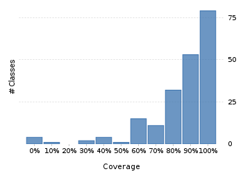
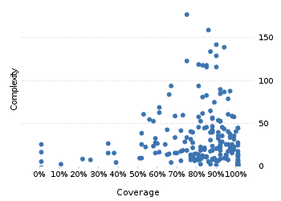

Project overview
Code coverage 228 classes, 17,751 / 21,538 elements
0.8241712582.4%
Test results 1,471 / 1,471 tests 13.99 secs
1.0100%
Code metrics
4,882
12,842
3,814
228
157
7
68,718
27,801
6,977
0.54
3.37
16.73
32.57
1.83
Class Coverage Distribution

Class Complexity

Coverage tree map
Generating Coverage Tree Map. Please wait...

Top 20 project risks
DateTimeFormatterBuilder.MatchingParser
DateTimeFormatterBuilder.NumberFormatter
StringConverter
DateTimeFieldType.StandardDateTimeFieldType
DurationFieldType.StandardDurationFieldType
PeriodType
BaseSingleFieldPeriod
Partial
PeriodFormatterBuilder.Composite
PeriodFormatterBuilder.Separator
GJLocaleSymbols
DateTimeZoneBuilder.RuleSet
DateTimeFormatterBuilder.FixedNumber
BasePeriod
FieldUtils
ISOChronology
PeriodFormatterBuilder.FieldFormatter
DateTimeFormatterBuilder.Composite
PeriodFormatterBuilder.SimpleAffix
DateTimeZone
Most complex packages
| 1. | 0.8653574686.5% |
org.joda.time 2458 |
| 2. | 0.7905847479.1% |
org.joda.time.format 1496 |
| 3. | 0.767487776.7% |
org.joda.time.chrono 1239 |
| 4. | 0.765957576.6% |
org.joda.time.field 667 |
| 5. | 0.840061384% |
org.joda.time.tz 535 |
Most complex classes
| 1. | 0.748560574.9% |
LocalDateTime 179 |
| 2. | 0.8501026685% |
LocalDate 161 |
| 3. | 0.8969465589.7% |
DateTimeZone 144 |
| 4. | 0.9338624593.4% |
DateTime 141 |
| 5. | 0.8617511486.2% |
PeriodFormatterBuilder.FieldFormatter 136 |